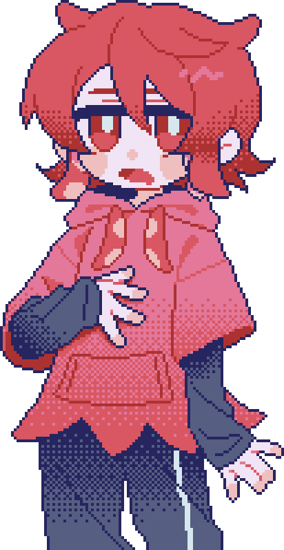
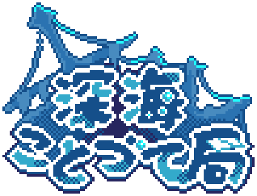
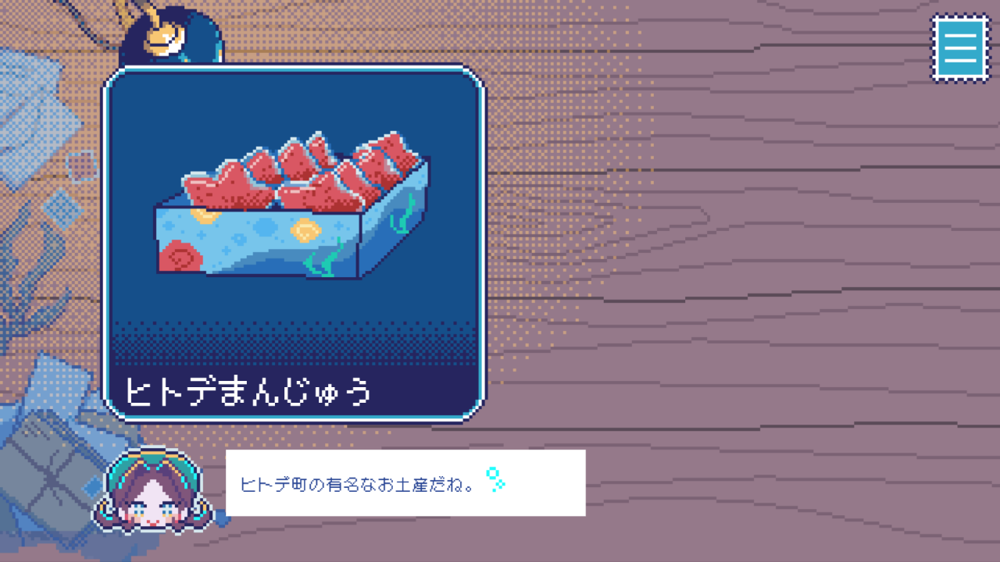
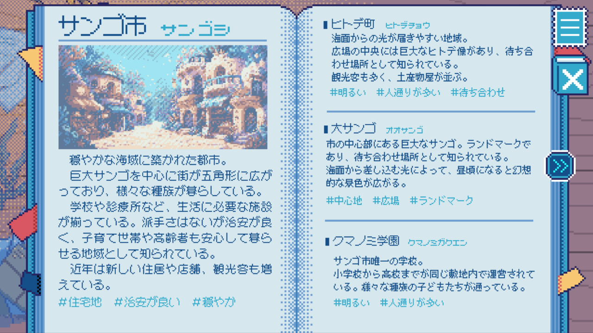
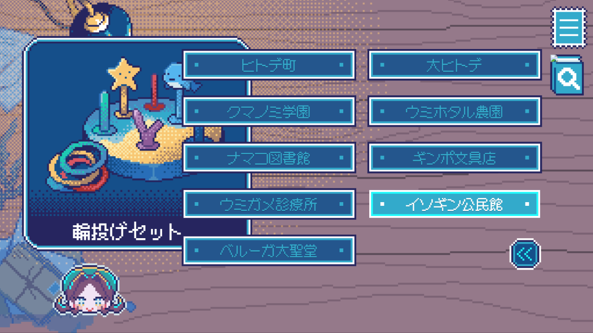
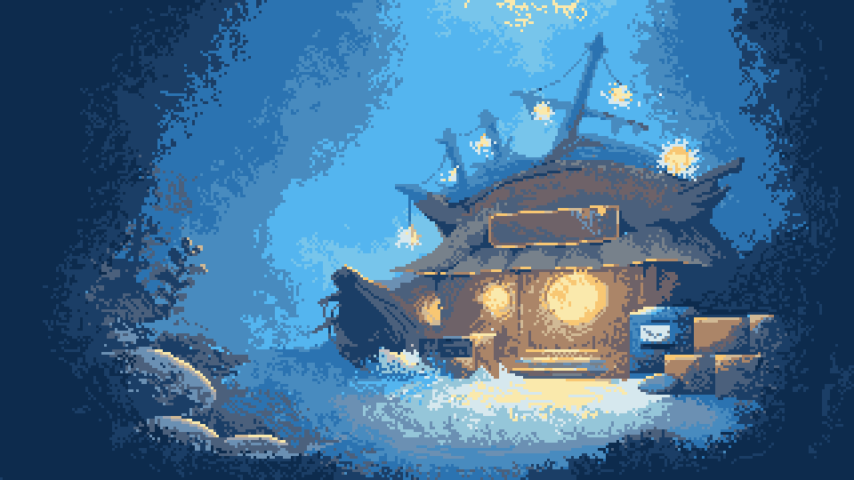

主人公ことづて局の新人
- 種族
- メンダコ
- 役職
- 深海ことづて局 局員
- 趣味
- 睡眠
自堕落でめんどうくさがり、無気力で内向的。
家賃滞納をきっかけに「ことづて局」を紹介され、働くことになる。
深海ことづて局
loading...

深海の郵便局で、他者とのつながりを再発見する、パズルＡＤＶゲーム
Prologue
海の外の世界には、「ポスト」という箱があるらしい。
そこに何かを入れると、遠くの誰かのところへ届くんだとか。
とある変わり者が、海にも似た仕組みを作ったようだ。
そうして作られたのが――「ことづて局」と呼ばれる場所である。
ここは深海のとある場所に作られた「ことづて局」。
そして、あなたは今日からここで働く新入りだ。
About the Game
ジャンル
仕分け×アドベンチャー
プレイ人数
1人
プレイ時間
3時間程度
対応機種
PC・スマートフォン
(どちらもブラウザ版)
Characters
Game System
海中の郵便文化は始まったばかり。
宛名が消えていたり、昔の地名で書かれていたり、海流で荷物が壊れてしまったり……
深海では様々な郵便トラブルが起こります。
プレイヤーの目的は、郵便物の届け先を推理して正しく配達すること。

01
郵便物を確認
届いた荷物の見た目、特徴などをじっくり観察する。

02
マニュアルを見る
局に保管されている資料で、地名や施設の情報を調べる。

03
届け先を推理
集めた手がかりから、正しい届け先を考える。
荷物の特徴や内容、地名、名産、文化……
センパイや他のキャラクターと会話しながら情報を集め、整理するのがコツです。
Gallery

Join the Bureau
ことづて局は、ヒトデ不足で大忙し！
いつでも新しい局員を待っています。